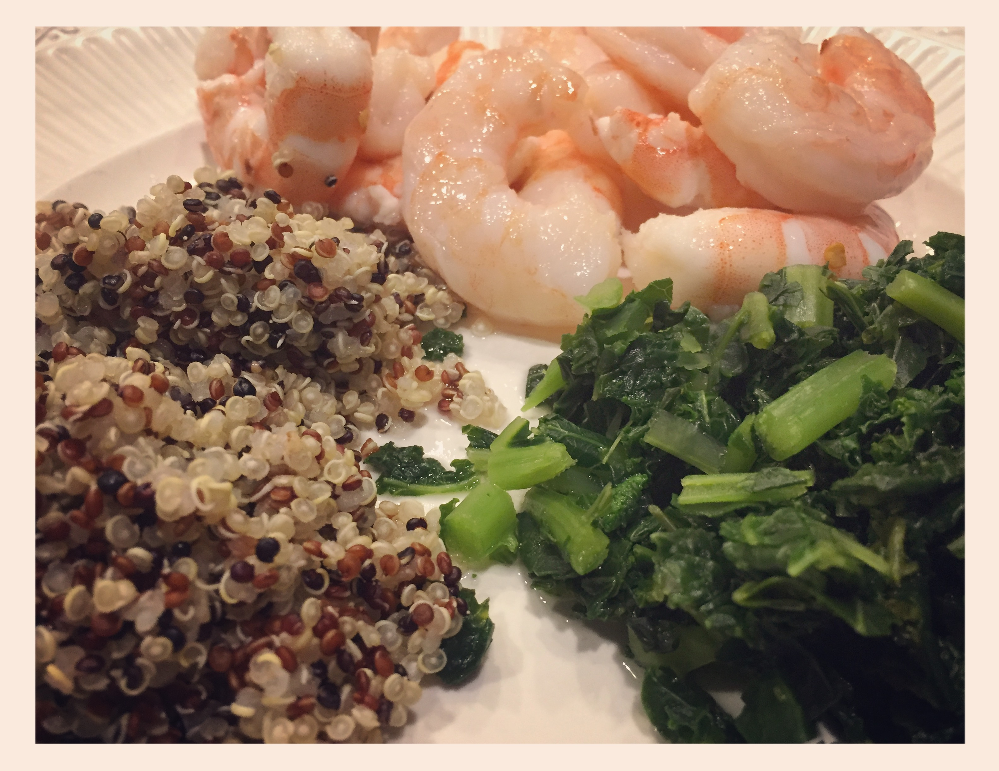

Frankly, My Dear...
Cheer's m'dears! Once upon a time I went to a one-man show. Said one-man show was.. how should I put it.. frankly... terrible. Not terribe, the drinks at the Blue Bar at the Algonquin Hotel. Firstly, I feel so fancy just saying 'ah yes we went to drinks at the Algonquin after a one-man play about who knows what where he tried to tap dance at weird times'. Secondly, the drinks were out of this world.
Read more!

Pick things up and put them down
Ever meet a Diva who changed your life? I did... I was once on a hunt for a personal trainer. I this badass woman through buzzfeed to refers to herself as a Diva and I was sold! Turns out, said Diva is a plus size pole dancer and all about body positivty...
Read more!

Jumbo shrimp
It's not just my size and height! Tonight I made some pretty awesome shrimp... and by made, I mean seasoned pre-cooked shrimp. The whole meal took about 20 minutes from start to finish and had the whole fam happily fed with this refreshing summer...
Read more!

A tower of tofu
Sometimes I cook things! Sometimes, if I'm really lucky, they don't burn! When I'm even luckier.. they actually taste ok! I am OBSESSED with this sweet and savory tofu recipe by Food Heaven Made easy. So easy, even I can do it (with minimal cursing) in practically no time at all!
Recipe!
Read more!